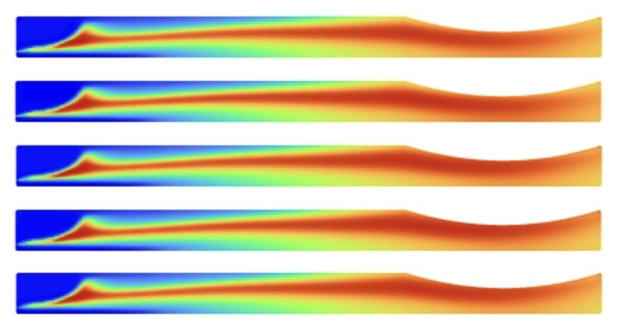

MEAM 6900 · Spring 2026
Rocket Combustion Chamber CFD
GOX/GCH₄ combustion and supersonic nozzle flow simulated in ANSYS Fluent with a species-transport combustion model. Independent parametric sweeps of back pressure, O/F mixture ratio, and injector swirl: rising back pressure suppressed nozzle choking and introduced normal shocks, while mixture-ratio sweeps from fuel-rich to ox-rich shifted flame temperature with peak values near MR ≈ 4 and left the flow structure largely unchanged. With Oren Minsk and Eitan Seitchik.